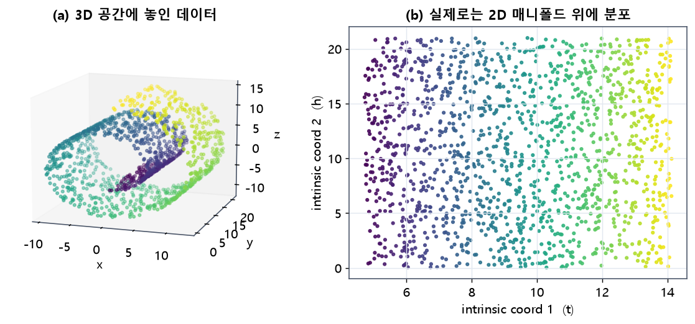
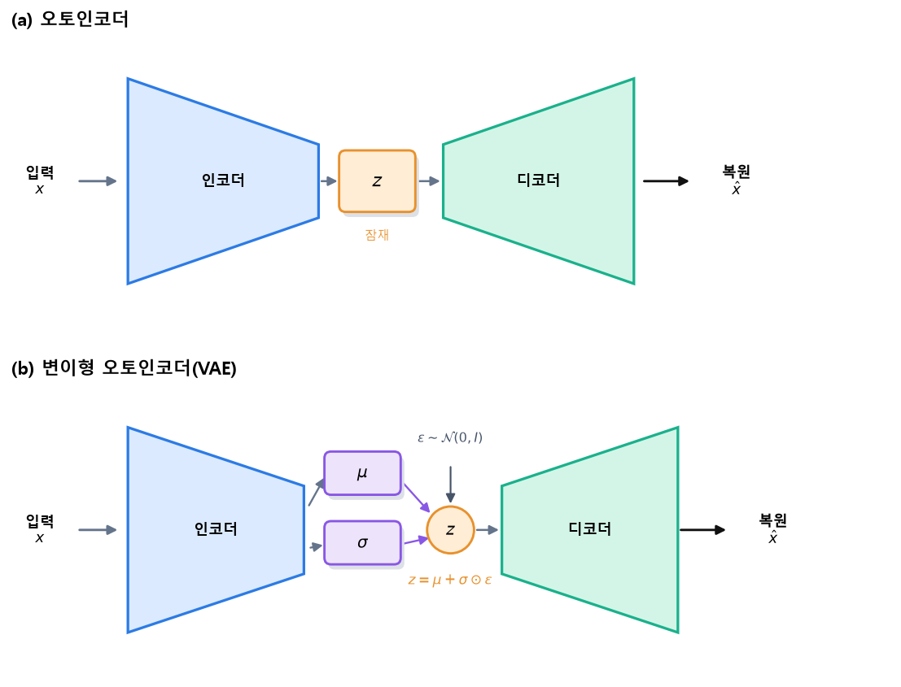
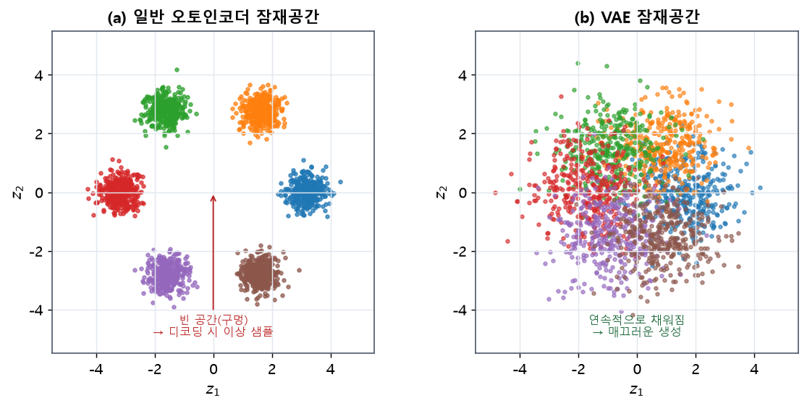
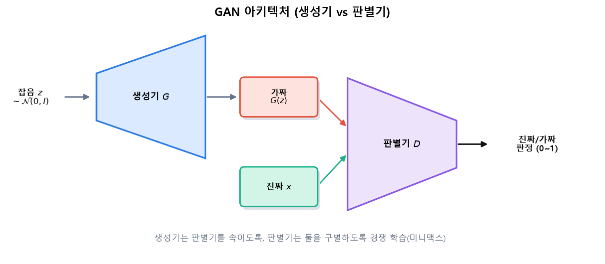
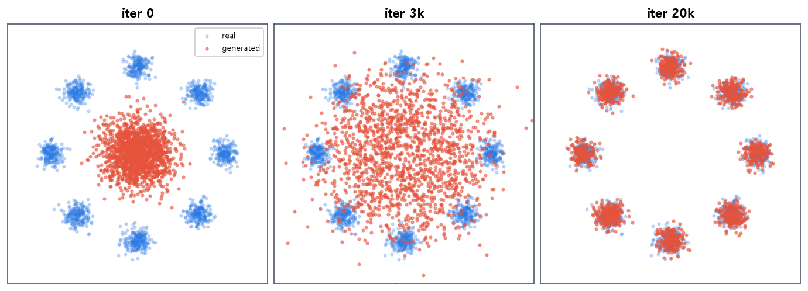
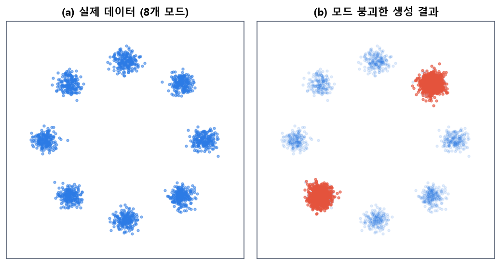
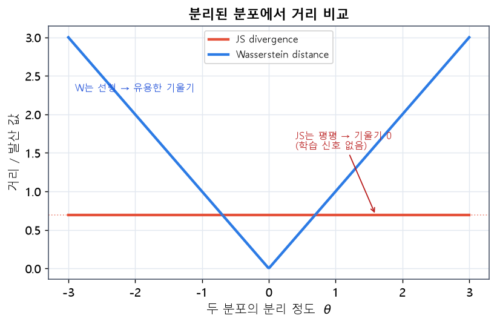
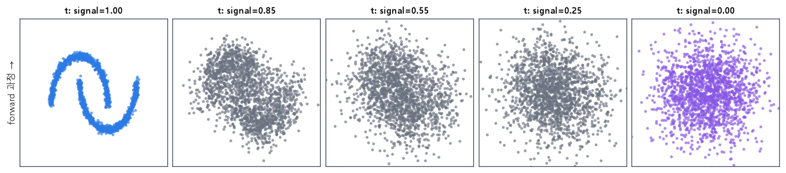

flowchart LR
Z["잠재 공간의 점 z<br/>(저차원)"] --> G["디코더 / 생성기 g"]
G --> X["생성된 데이터 x = g(z)<br/>(고차원)"]
17 생성 모델 입문
이 장은 데이터를 스스로 만들어 내는 생성 모델을 다룹니다. 먼저 고차원 데이터가 사실은 낮은 차원의 매니폴드 위에 놓여 있다는 매니폴드 가설에서 출발해, 생성 모델과 잠재 공간의 개념을 세웁니다. 이어서 오토인코더가 매니폴드를 학습하는 방식을 이해하고, 이를 확률적으로 확장한 변이형 오토인코더(VAE)와, 경쟁 학습으로 데이터를 생성하는 생성적 적대 신경망(GAN), 그리고 Wasserstein GAN과 디퓨전 모델까지 살펴봅니다. 개념은 그림과 수식으로 함께 설명합니다.
17.1 판별 모델과 생성 모델
지금까지 배운 분류·회귀·검출 모델은 대부분 판별 모델(discriminative model)입니다. 입력 \(x\)가 주어졌을 때 라벨 \(y\)의 조건부 확률 \(p(y \mid x)\)를 학습해, “이 이미지는 고양이인가”를 판별합니다. 이런 모델은 입력을 받아 정답을 내놓는, 이미 주어진 데이터를 해석하는 일을 합니다. 반면 생성 모델(generative model)은 데이터 자체의 분포 \(p(x)\)를 학습해, 그 분포에서 새로운 데이터를 만들어 냅니다. 고양이 사진을 판별하는 데 그치지 않고, 세상에 없던 고양이 사진을 생성하는 것이 생성 모델의 목표입니다.
두 모델의 차이는 목표의 근본적 차이에서 옵니다. 판별 모델은 서로 다른 클래스를 가르는 경계만 배우면 되므로, 데이터가 실제로 어떻게 생겼는지 전부 알 필요가 없습니다. 반면 생성 모델은 데이터를 만들어야 하므로, 데이터가 어떤 모습으로 존재하는지 그 분포 전체를 이해해야 합니다. 그만큼 생성은 판별보다 근본적으로 어려운 문제입니다. 고양이와 개를 구별하기는 쉬워도, 그럴듯한 고양이를 그려 내기는 훨씬 어렵다는 것을 생각하면 직관적입니다.
생성 모델이 데이터를 만들려면 데이터가 어떻게 분포하는지를 이해해야 합니다. 그런데 이미지 같은 고차원 데이터의 분포를 직접 다루기는 매우 어렵습니다. \(28\times28\) 흑백 이미지만 해도 784차원 공간의 한 점이고, 컬러 고해상도 이미지는 수백만 차원에 이릅니다. 이 방대한 공간을 이해하는 열쇠가 바로 매니폴드 개념입니다.
17.2 데이터 매니폴드 개념
매니폴드 가설(manifold hypothesis)은 현실의 고차원 데이터가 사실은 그 공간 전체에 고르게 퍼져 있는 것이 아니라, 훨씬 낮은 차원의 매끄러운 곡면(매니폴드) 근처에 집중되어 있다는 가설입니다(Bengio 기타, 2013). 예를 들어 손글씨 숫자 이미지는 784차원 공간의 아무 점이나 될 수 있지만, 실제로 의미 있는 숫자 이미지는 그 공간의 극히 일부, 즉 저차원 매니폴드 위에만 존재합니다. 784차원의 무작위 점은 거의 항상 의미 없는 잡음이기 때문입니다.

그림 7.1 매니폴드 가설. (a) 3차원 공간에 놓인 데이터처럼 보이지만, (b) 실제로는 두 개의 내재 좌표로 기술되는 2차원 매니폴드(말려 있는 종이) 위에 데이터가 분포합니다. 색은 매니폴드를 따라가는 위치를 나타냅니다. 고차원 데이터의 자유도가 겉보기 차원보다 훨씬 낮다는 것이 매니폴드 가설의 핵심입니다.
그림 7.1은 이 개념을 보여 줍니다. 왼쪽의 데이터는 3차원 공간에 흩어져 있는 듯 보이지만, 사실은 말려 있는 2차원 곡면 위에 놓여 있습니다. 이 곡면을 펼치면 오른쪽처럼 단 두 개의 좌표로 모든 데이터를 기술할 수 있습니다. 즉 데이터의 진짜 자유도는 3이 아니라 2입니다.
왜 데이터가 저차원 매니폴드에 놓이는지는 데이터의 생성 원리를 생각하면 이해됩니다. 손글씨 숫자 이미지는 784개 픽셀이 제멋대로 정해지는 것이 아니라, “어떤 숫자를, 얼마나 기울여, 얼마나 굵게, 어떤 필체로 썼는가” 같은 소수의 요인으로 결정됩니다. 이 요인들이 곧 매니폴드의 내재 좌표이며, 그 수가 픽셀 수보다 훨씬 적기 때문에 데이터의 실제 자유도가 낮아지는 것입니다. 즉 매니폴드의 차원은 데이터를 만들어 내는 숨은 요인의 개수에 대응합니다.
이 가설은 생성 모델에 결정적 의미를 갖습니다. 만약 데이터가 저차원 매니폴드 위에 있다면, 우리는 그 매니폴드의 내재 좌표를 찾아내면 됩니다. 이 저차원 좌표를 잠재 변수(latent variable)라 부르고, 그 좌표들이 이루는 공간을 잠재 공간(latent space)이라 합니다. 생성 모델의 핵심 전략은 이 저차원 잠재 공간을 학습하고, 잠재 공간의 한 점을 고차원 데이터로 되돌리는 사상을 배우는 것입니다. 잠재 공간에서 점을 뽑아 이 사상에 통과시키면, 매니폴드 위의 새로운 데이터, 곧 세상에 없던 그럴듯한 샘플이 만들어집니다.
17.3 생성 모델과 잠재 공간
잠재 공간은 데이터의 본질적 특징을 담은 저차원 공간입니다. 잘 학습된 잠재 공간에서는 각 축이 데이터의 의미 있는 변화 요인에 대응합니다. 예를 들어 얼굴 이미지의 잠재 공간에서 한 축은 웃음의 정도를, 다른 축은 얼굴의 방향을 담을 수 있습니다.
생성은 이 잠재 공간의 한 점 \(z\)를 뽑아 디코더(decoder) 또는 생성기(generator)라 부르는 신경망 \(g\)에 통과시켜 데이터 \(x = g(z)\)를 만드는 과정입니다.
잘 학습된 잠재 공간은 데이터를 압축하면서도 그 본질을 보존합니다. 좋은 생성 모델이 되려면 잠재 공간이 두 가지 성질을 가져야 합니다. 첫째, 잠재 공간에서 아무 점이나 뽑아도 그럴듯한 데이터가 나와야 합니다(완전성). 둘째, 잠재 공간에서 가까운 두 점은 비슷한 데이터로, 멀어질수록 점점 다른 데이터로 이어져야 합니다(연속성). 이 두 성질을 어떻게 확보하느냐가 생성 모델마다 다르며, 이것이 오토인코더·VAE·GAN·디퓨전을 구분하는 핵심입니다.
매니폴드 학습에 기반한 대표적 생성 모델의 유형을 정리하면 다음과 같습니다.
flowchart TB
GM["생성 모델"]
GM --> AE["오토인코더 계열<br/>(AE · VAE)"]
GM --> GAN["적대 학습 계열<br/>(GAN · WGAN · DCGAN)"]
GM --> DIFF["디퓨전 계열<br/>(DDPM · score-based)"]
AE --> AE1["잠재 공간으로 압축·복원"]
GAN --> GAN1["생성기 vs 판별기 경쟁"]
DIFF --> DIFF1["점진적 노이즈 제거"]
17.4 오토인코더와 매니폴드 학습
오토인코더(autoencoder)는 입력을 저차원으로 압축했다가 다시 복원하도록 학습하는 신경망입니다. 두 부분으로 이루어집니다. 인코더(encoder) \(f\)는 입력 \(x\)를 저차원 잠재 벡터 \(z = f(x)\)로 압축하고, 디코더(decoder) \(g\)는 그 잠재 벡터로부터 입력을 복원합니다 \(\hat{x} = g(z)\). 가운데의 좁은 층을 병목(bottleneck)이라 부릅니다.
오토인코더와, 뒤에서 볼 VAE의 구조는 그림 7.2와 같은 모래시계 형태입니다.

그림 7.2 오토인코더와 VAE의 아키텍처. (a) 오토인코더는 입력 \(x\)를 인코더로 저차원 잠재 \(z\)까지 압축한 뒤 디코더로 복원 \(\hat{x}\)을 만드는 모래시계 구조입니다. (b) VAE는 인코더가 하나의 점 대신 평균 \(\mu\)와 분산 \(\sigma\)를 내고, \(z=\mu+\sigma\odot\varepsilon\)으로 샘플링해(재매개변수화) 디코더에 넣습니다. 좁아졌다 넓어지는 형태가 저차원 매니폴드로의 압축과 복원을 나타냅니다.
17.4.1 학습 과정
오토인코더는 복원이 원본과 최대한 같아지도록, 복원 오차(reconstruction error)를 최소화하며 학습합니다. 이미지처럼 연속값이면 평균제곱오차를 씁니다.
\[ \mathcal{L}_{\text{AE}} = \frac{1}{N}\sum_{i=1}^{N} \lVert x_i - g(f(x_i)) \rVert^2 . \]
라벨이 전혀 필요 없이 입력 자신을 정답으로 삼으므로, 오토인코더는 비지도 학습입니다. 학습이 끝나면 인코더는 데이터를 잘 요약하는 특징 추출기가 되고, 디코더는 잠재 벡터를 데이터로 되돌리는 생성기가 됩니다.
여기서 병목의 크기가 결정적입니다. 만약 병목이 입력만큼 넓으면, 오토인코더는 입력을 그대로 복사하기만 하면 되어 아무것도 배우지 못합니다. 병목을 좁게 만들어야 신경망이 모든 정보를 담을 수 없게 되고, 그 제약 아래서 가장 중요한 정보만 압축해 담는 법을 배우게 됩니다. 즉 병목의 좁음이 의미 있는 표현 학습을 강제하는 압력이 됩니다. 이는 데이터에서 불필요한 세부를 버리고 본질적 구조만 남기도록 이끄는 것으로, 매니폴드의 내재 좌표를 찾는 일과 정확히 맞닿아 있습니다.
17.4.2 데이터 매니폴드와의 관계
오토인코더가 복원을 잘하려면, 병목의 저차원 잠재 벡터만으로 원본을 되살릴 수 있어야 합니다. 이는 오토인코더가 데이터의 저차원 매니폴드 구조를 학습하도록 강제합니다. 병목 차원이 매니폴드의 내재 차원과 비슷하면, 인코더는 데이터를 매니폴드의 내재 좌표로 사상하고 디코더는 그 좌표를 다시 데이터로 펼치는 법을 배웁니다. 실제로 은닉층 없이 선형으로만 구성한 오토인코더는 주성분분석(PCA)과 밀접하게 연결되며(Bourlard & Kamp, 1988), 비선형 오토인코더는 이를 곡면으로 확장해 더 복잡한 매니폴드를 포착합니다(Hinton & Salakhutdinov, 2006). 이런 관점은 고전적 매니폴드 학습 기법인 Isomap(Tenenbaum 기타, 2000)이나 국소 선형 임베딩(Roweis & Saul, 2000)과도 문제의식을 공유합니다.
17.4.3 오토인코더의 응용
오토인코더는 생성 외에도 널리 쓰입니다. 잠재 벡터를 특징으로 활용하는 차원 축소와 시각화, 입력에 잡음을 넣고 원본을 복원하게 해 강인한 특징을 얻는 잡음 제거 오토인코더(Vincent 기타, 2008; Vincent 기타, 2010), 정상 데이터만 학습한 뒤 복원 오차가 큰 입력을 골라내는 이상 탐지, 그리고 사전학습을 통한 표현 학습 등이 대표적입니다. 잠재 공간을 연속값이 아닌 이산 코드로 두어 표현을 학습하는 VQ-VAE 같은 변형도 있어, 이미지·음성 생성의 기반으로 활용됩니다(Oord 기타, 2017). 이처럼 오토인코더는 그 자체로도 유용하지만, 무엇보다 잠재 공간이라는 개념을 통해 이후의 생성 모델들이 서 있는 토대를 마련했다는 점에서 중요합니다. 다만 일반 오토인코더는 생성 모델로서는 약점이 있습니다. 잠재 공간이 조직되는 방식에 아무런 제약이 없어, 학습된 잠재 벡터들 사이사이에 빈 공간(구멍)이 생기기 쉽습니다. 그 빈 공간의 점을 디코더에 넣으면 그럴듯하지 않은 이상한 출력이 나옵니다. 이 문제를 해결한 것이 다음의 변이형 오토인코더입니다.
17.5 변이형 오토인코더 (VAE)
변이형 오토인코더(Variational Autoencoder, VAE)는 오토인코더에 확률적 관점을 더해, 잠재 공간이 매끄럽고 연속적으로 조직되도록 만든 생성 모델입니다(Kingma & Welling, 2014; Rezende 기타, 2014).
17.5.1 기본 구조
VAE의 인코더는 입력을 하나의 점이 아니라 확률 분포로 사상합니다. 구체적으로 입력 \(x\)를 잠재 공간의 가우시안 분포의 평균 \(\mu\)와 분산 \(\sigma^2\)로 인코딩합니다. 그리고 그 분포에서 잠재 벡터 \(z\)를 샘플링해 디코더에 넣습니다. 그 구조는 앞의 그림 7.2(b)에 나타나 있습니다.
17.5.2 학습 목표
VAE의 학습 목표는 두 항으로 이루어집니다. 데이터의 로그 가능도에 대한 하한인 증거 하한(ELBO)을 최대화합니다.
\[ \log p(x) \ \ge\ \underbrace{\mathbb{E}_{q(z\mid x)}\big[\log p(x \mid z)\big]}_{\text{복원 항}} \ -\ \underbrace{D_{\mathrm{KL}}\big(q(z\mid x)\,\Vert\, p(z)\big)}_{\text{정규화 항}} . \]
첫째 복원 항은 잠재 벡터로부터 입력을 잘 복원하도록 이끌어, 오토인코더의 복원 오차와 같은 역할을 합니다. 둘째 정규화 항은 인코더가 만든 분포 \(q(z\mid x)\)가 표준 정규분포 \(p(z)=\mathcal{N}(0, I)\)에 가까워지도록 KL 발산으로 당깁니다. 여기서 KL 발산은 두 확률 분포가 얼마나 다른지를 재는 척도로, 이 값이 작을수록 인코더의 잠재 분포가 표준 정규분포에 가깝다는 뜻입니다.
이 정규화가 VAE의 핵심입니다. 일반 오토인코더는 잠재 벡터를 아무 데나 배치해도 복원만 잘하면 되지만, VAE는 모든 입력의 잠재 분포를 표준 정규분포 쪽으로 모읍니다. 그 결과 잠재 공간이 원점 주위에 빈틈없이 연속적으로 채워지고, 표준 정규분포에서 아무 점이나 뽑아 디코더에 넣으면 그럴듯한 데이터가 나옵니다. 바로 이 점이 VAE를 진정한 생성 모델로 만듭니다. 두 항은 서로 팽팽히 맞섭니다. 복원 항은 각 입력을 잘 구분되는 위치에 두려 하고, 정규화 항은 모두를 원점으로 모으려 합니다. 이 둘의 균형에서 잘 조직된 잠재 공간이 생겨납니다. ELBO의 자세한 유도와 직관은 여러 튜토리얼에 잘 정리되어 있습니다(Doersch, 2016; Kingma & Welling, 2019).
17.5.3 재매개변수화 기법
한 가지 문제는 “분포에서 샘플링”하는 연산이 무작위라 역전파가 통과할 수 없다는 점입니다. VAE는 재매개변수화 기법(reparameterization trick)으로 이를 해결합니다. 무작위성을 외부의 표준 정규 잡음 \(\varepsilon\)으로 분리해, 다음과 같이 잠재 벡터를 만듭니다.
\[ z = \mu + \sigma \odot \varepsilon, \qquad \varepsilon \sim \mathcal{N}(0, I). \]
이렇게 하면 \(\mu\)와 \(\sigma\)에 대해서는 미분이 가능해져, 무작위 샘플링을 포함하고도 역전파로 학습할 수 있습니다.
17.5.4 잠재 공간의 특징
VAE의 정규화 덕분에 잠재 공간은 오토인코더보다 훨씬 매끄럽고 연속적입니다. 그림 7.3은 그 차이를 보여 줍니다.

그림 7.3 잠재 공간의 조직 방식. (a) 일반 오토인코더는 클래스별 잠재 벡터가 서로 멀리 떨어진 군집을 이루어, 군집 사이에 빈 공간이 생깁니다. 그 빈 공간을 디코딩하면 의미 없는 출력이 나옵니다. (b) VAE는 모든 잠재 분포를 표준 정규분포로 당겨 서로 겹치며 공간을 연속적으로 채우므로, 어느 점을 뽑아도 그럴듯한 데이터가 생성됩니다.
VAE는 학습이 안정적이고 잠재 공간이 잘 정리된다는 장점이 있습니다. 확률적 관점 덕분에 데이터의 로그 가능도를 다루는 이론적 틀도 명확합니다. 다만 복원에 평균제곱오차를 쓰는 특성상, 여러 가능한 복원의 평균을 취하게 되어 생성 이미지가 다소 흐릿하게 나오는 경향이 있습니다. 이 선명함의 한계를 전혀 다른 방식, 즉 복원 오차 대신 경쟁 학습으로 극복한 것이 GAN입니다.
17.6 잠재 공간의 연속성과 모델 성능
잠재 공간의 연속성은 생성 모델의 성능을 좌우하는 핵심 성질입니다. 연속적인 잠재 공간에서는 두 데이터에 해당하는 잠재 벡터 사이를 직선으로 이동하면, 생성 결과가 한 데이터에서 다른 데이터로 매끄럽게 변형됩니다. 예를 들어 숫자 3의 잠재 벡터에서 숫자 8의 잠재 벡터로 이동하면, 중간에 3과 8을 섞은 듯한 모양들이 연속적으로 나타납니다. 이를 잠재 공간 보간(interpolation)이라 하며, 모델이 데이터의 매니폴드를 잘 학습했는지를 보여 주는 대표적 증거입니다.
반대로 잠재 공간에 구멍이 많으면, 보간 경로가 그 구멍을 지날 때 이상한 출력이 튀어나옵니다. 따라서 잠재 공간을 빈틈없이 연속적으로 조직하는 것이 좋은 생성 모델의 요건입니다. VAE의 KL 정규화, 그리고 뒤에서 볼 GAN의 잠재 공간 구조가 모두 이 연속성을 확보하려는 장치입니다.
연속성은 모델의 성능을 평가하는 단서이기도 합니다. 잠재 공간을 따라 이동할 때 생성 결과가 급격히 튀거나 같은 결과만 반복된다면, 모델이 데이터 매니폴드를 제대로 학습하지 못한 것입니다. 반대로 부드럽고 의미 있는 변형이 나타난다면, 모델이 데이터의 숨은 구조를 잘 파악했다는 뜻입니다. 또한 잠재 공간의 차원이 매니폴드의 실제 내재 차원보다 너무 작으면 데이터를 충분히 표현하지 못하고, 너무 크면 불필요한 자유도가 생겨 학습이 비효율적이 됩니다. 적절한 잠재 차원을 고르는 것 역시 생성 모델 설계의 중요한 부분입니다.
17.7 생성적 적대 신경망 (GAN)
생성적 적대 신경망(Generative Adversarial Network, GAN)은 두 신경망을 경쟁시켜 데이터를 생성하는 모델입니다(Goodfellow 기타, 2014). 위조지폐범과 경찰의 비유로 흔히 설명됩니다. 위조범은 점점 더 진짜 같은 지폐를 만들려 하고, 경찰은 진짜와 가짜를 점점 더 잘 구별하려 합니다. 둘이 경쟁하며 실력을 키우면, 결국 위조범은 진짜와 구별할 수 없는 지폐를 만들게 됩니다.
17.7.1 기본 구조와 원리
GAN은 생성기(generator) \(G\)와 판별기(discriminator) \(D\) 두 신경망으로 이루어집니다. 생성기는 잠재 벡터 \(z\)를 받아 가짜 데이터 \(G(z)\)를 만들고, 판별기는 입력이 진짜 데이터인지 생성기가 만든 가짜인지를 판정합니다.

그림 7.4 GAN 아키텍처. 생성기 \(G\)는 잡음 \(z\)를 받아 가짜 데이터 \(G(z)\)를 만들고, 판별기 \(D\)는 진짜 \(x\)와 가짜 \(G(z)\)를 받아 진짜일 확률(0~1)을 출력합니다. 생성기는 판별기를 속이도록, 판별기는 둘을 정확히 구별하도록 서로 경쟁하며 학습합니다.
17.7.2 학습: 미니맥스 게임
두 신경망은 하나의 목적 함수를 두고 서로 반대 방향으로 겨루는 미니맥스 게임(minimax game)을 벌입니다.
\[ \min_{G}\ \max_{D}\ \ \mathbb{E}_{x \sim p_{\text{data}}}\big[\log D(x)\big] \ +\ \mathbb{E}_{z \sim p_z}\big[\log\big(1 - D(G(z))\big)\big]. \]
판별기 \(D\)는 이 값을 최대화하려 합니다. 진짜 \(x\)에는 \(D(x)\)를 1로, 가짜 \(G(z)\)에는 \(D(G(z))\)를 0으로 만들려 합니다. 반대로 생성기 \(G\)는 이 값을 최소화하려 합니다. 즉 판별기가 가짜를 진짜로 착각하도록(\(D(G(z))\)가 1이 되도록) 생성을 개선합니다. 두 신경망을 번갈아 학습하면, 이론적으로 생성기의 분포가 실제 데이터 분포와 같아지는 균형(내시 균형)에 도달합니다. 이 지점에서는 판별기가 진짜와 가짜를 전혀 구별하지 못해 모든 입력에 대해 0.5의 확률을 내놓게 되는데, 이는 생성 분포가 실제 분포와 완전히 같아졌음을 뜻합니다.
한 가지 실무적 요령이 있습니다. 학습 초기에는 생성기가 만든 가짜가 조악해 판별기가 너무 쉽게 구별하고, 이때 \(\log(1-D(G(z)))\) 항의 기울기가 매우 작아 생성기가 학습되지 않습니다. 그래서 실제로는 생성기가 \(\log D(G(z))\)를 최대화하도록 목적을 바꿔, 초기에도 충분한 기울기를 받게 합니다. 이런 세부 조정이 GAN을 실제로 학습시키는 데 중요합니다.

그림 7.5 GAN 학습에 따른 분포 수렴. 파란 점은 실제 데이터 분포(여덟 개의 모드), 붉은 점은 생성기가 만든 샘플입니다. 학습 초기(왼쪽)에는 생성 분포가 중앙에 뭉쳐 있지만, 학습이 진행되며(가운데) 점차 퍼지고, 수렴하면(오른쪽) 실제 분포의 여덟 모드를 모두 덮습니다.
그림 7.5는 학습이 진행되며 생성 분포가 실제 분포를 따라가는 과정을 보여 줍니다. 실제 학습에서는 두 신경망을 번갈아 갱신합니다. 판별기를 한두 걸음 학습해 진짜와 가짜를 더 잘 구별하게 만든 뒤, 생성기를 한 걸음 학습해 판별기를 더 잘 속이게 만드는 식입니다. 이 과정이 반복되며 둘의 실력이 함께 올라갑니다.
GAN은 복원 오차가 아니라 판별기의 신호로 학습한다는 점이 VAE와 근본적으로 다릅니다. VAE는 픽셀 단위 평균제곱오차로 “평균적으로 비슷한” 이미지를 만들다 보니 흐릿해지는 반면, GAN은 “진짜처럼 보이는가”라는 판별기의 판단을 따르므로 훨씬 선명하고 사실적인 이미지를 생성합니다. 이 강점 덕분에 GAN은 등장 이후 폭발적으로 연구되었고, 합성곱을 도입해 안정적 이미지 생성을 이끈 DCGAN(Radford 기타, 2016), 원하는 클래스를 지정해 생성하는 조건부 GAN(Mirza & Osindero, 2014) 등 수많은 변형으로 발전했습니다(Creswell 기타, 2018).
17.7.3 잠재 공간의 특성
GAN의 잠재 공간도 의미 있는 구조를 학습합니다. 생성기는 표준 정규분포에서 뽑은 잠재 벡터를 데이터로 사상하도록 학습되므로, 잠재 공간이 자연스럽게 연속적으로 조직됩니다. 잠재 벡터에 대한 산술 연산이 데이터의 의미적 연산으로 이어지기도 합니다. 예를 들어 얼굴 생성 GAN에서 “안경 쓴 남자” 잠재 벡터에서 “남자” 벡터를 빼고 “여자” 벡터를 더하면 “안경 쓴 여자”가 생성되는 식입니다(Radford 기타, 2016). 이는 잠재 공간의 방향들이 웃음·성별·안경 같은 해석 가능한 의미 축에 대응함을 뜻합니다. 잠재 공간을 따라 이동하면 생성 결과가 매끄럽게 변해, GAN도 VAE처럼 데이터 매니폴드를 학습함을 보여 줍니다. 다만 VAE가 명시적 확률 목표로 잠재 공간을 조직하는 것과 달리, GAN은 경쟁 학습을 통해 암묵적으로 이 구조를 얻는다는 점이 다릅니다.
17.7.4 GAN 학습의 한계
GAN은 강력하지만 학습이 불안정하기로 악명이 높습니다. 대표적 문제가 모드 붕괴(mode collapse)입니다(Salimans 기타, 2016). 생성기가 판별기를 속이기 쉬운 몇 종류의 샘플만 반복 생성하고, 데이터의 다양성 전체를 담지 못하는 현상입니다.

그림 7.6 모드 붕괴. (a) 실제 데이터는 여덟 개의 모드에 고르게 분포합니다. (b) 모드가 붕괴한 생성기는 그중 일부 모드만 반복해 생성하고 나머지 모드는 전혀 만들지 못합니다. 판별기를 속이는 데는 성공하지만 데이터의 다양성을 잃은 상태입니다.
모드 붕괴 외에도, 생성기와 판별기의 실력 균형이 깨지면 학습이 발산하거나 정체됩니다. 특히 판별기가 너무 강해지면 생성기로 가는 기울기가 소실되어 학습이 멈추고, 반대로 생성기가 판별기를 앞서면 조악한 샘플에 안주하게 됩니다. 두 신경망이 서로를 쫓는 과정이 안정된 균형에 이르지 못하고 진동하는 경우도 많습니다. 이런 여러 불안정성의 근본 원인을 이론적으로 파고든 것이 Wasserstein GAN입니다.
17.8 Wasserstein GAN
Wasserstein GAN(WGAN)은 GAN 학습이 불안정한 근본 원인이 분포 사이의 거리를 재는 방식에 있다고 진단했습니다(Arjovsky 기타, 2017). 기존 GAN은 사실상 두 분포의 JS 발산을 줄이는 셈인데, 두 분포가 겹치지 않으면 JS 발산이 상수가 되어 기울기가 0이 됩니다. 실제 데이터와 초기 생성 분포는 고차원에서 거의 겹치지 않으므로, 학습 초기에 유용한 기울기를 얻기 어렵습니다.

그림 7.7 분포가 분리되어 있을 때의 거리 비교. 두 분포가 겹치지 않으면(가로축이 분리 정도) JS 발산(붉은색)은 상수 log2로 평평해져 기울기가 0이 되고, 생성기는 학습 신호를 받지 못합니다. 반면 Wasserstein 거리(파란색)는 분리 정도에 선형으로 비례해, 아무리 멀리 떨어져 있어도 줄여야 할 방향(기울기)을 제공합니다.
WGAN은 대신 Wasserstein 거리(Earth Mover’s distance)를 사용합니다. 이 거리는 한 분포를 흙더미로 보고, 그 흙을 다른 분포 모양으로 옮기는 데 드는 최소 비용, 즉 옮기는 흙의 양에 이동 거리를 곱한 값의 최솟값으로 정의됩니다. 직관적으로 두 분포가 얼마나 멀리, 얼마나 많이 다른지를 함께 반영하므로, 두 분포가 겹치지 않아도 그 떨어진 정도에 비례해 매끄럽게 변합니다. 그림 7.7이 보여 주듯, Wasserstein 거리는 분포가 아무리 멀리 떨어져 있어도 유용한 기울기를 제공합니다. 그 결과 WGAN은 학습이 훨씬 안정적이고, 손실 값이 생성 품질과 잘 대응해 학습 상태를 파악하기 쉽습니다. 판별기를 확률이 아닌 실수 점수를 내는 비평자(critic)로 바꾸고, 립시츠 조건을 만족시키기 위해 가중치를 제한하거나 기울기에 벌점을 주는 방식으로 구현됩니다(Gulrajani 기타, 2017). WGAN은 GAN 학습 안정화 연구의 중요한 이정표가 되었습니다.
17.9 디퓨전 모델
디퓨전 모델(diffusion model)은 최근 이미지 생성에서 가장 뛰어난 성능을 보이는 생성 모델입니다(Sohl-Dickstein 기타, 2015; Ho 기타, 2020). 이름은 잉크 한 방울이 물속에서 서서히 퍼져 나가는 확산 현상에서 왔습니다. 핵심 아이디어는 데이터에 노이즈를 조금씩 더해 완전한 잡음으로 만드는 전방 과정(forward process)과, 그 반대로 잡음에서 노이즈를 조금씩 제거해 데이터를 복원하는 역방향 과정(reverse process)을 배우는 것입니다. 앞의 GAN이나 VAE가 잠재 벡터를 한 번에 데이터로 바꾸는 것과 달리, 디퓨전은 여러 단계에 걸쳐 점진적으로 데이터를 완성한다는 점이 근본적으로 다릅니다.

그림 7.8 디퓨전의 전방 과정. 왼쪽의 구조화된 데이터 분포에서 시작해, 단계마다 조금씩 가우시안 노이즈를 더하면 결국 완전한 표준 정규 잡음(오른쪽)이 됩니다. 디퓨전 모델은 이 과정을 거꾸로 되돌리는 법, 즉 잡음에서 노이즈를 한 단계씩 제거해 데이터를 복원하는 법을 학습합니다.
그림 7.8처럼, 전방 과정은 정해진 규칙으로 노이즈를 더하기만 하면 되므로 학습이 필요 없습니다. 모델이 학습하는 것은 역방향, 즉 “지금 이 잡음 섞인 데이터에서 어떤 노이즈를 빼야 하는가”입니다. 구체적으로는 각 단계에서 데이터에 섞인 노이즈를 예측하도록 신경망을 학습시키고, 예측한 노이즈를 조금 덜어 내는 일을 반복합니다. 어려운 생성 문제를 한 번에 푸는 대신, “노이즈를 조금 제거하기”라는 쉬운 문제를 여러 단계로 나누어 푸는 것이 디퓨전의 묘리입니다.
생성할 때는 순수한 잡음에서 시작해 학습된 노이즈 제거를 여러 번 반복하며 점점 선명한 데이터를 만들어 냅니다. 이 점진적 방식 덕분에 디퓨전 모델은 GAN 같은 불안정한 경쟁 학습 없이 안정적으로 학습되면서도 매우 높은 품질과 다양성을 얻습니다. 대신 생성에 수십~수백 단계가 필요해 GAN보다 느리다는 단점이 있어, 이를 가속하는 연구가 활발합니다. 디퓨전은 데이터 분포의 기울기(스코어)를 추정하는 스코어 기반 관점(Song & Ermon, 2019)과 이론적으로 연결되며, 오늘날 이미지 생성 AI의 중심 기술로 자리 잡았습니다. VAE의 확률적 잠재 변수 관점을 여러 단계로 확장한 것이 디퓨전이라고 볼 수도 있어, 앞서 배운 개념들이 하나로 이어짐을 알 수 있습니다.
17.10 생성 모델의 비교와 정리
지금까지 본 생성 모델들은 모두 데이터 매니폴드를 학습해 새로운 데이터를 만든다는 공통 목표를 가지지만, 접근 방식이 다릅니다.
| 모델 | 핵심 원리 | 장점 | 한계 |
|---|---|---|---|
| 오토인코더 | 압축-복원 | 단순·표현 학습 | 잠재 공간에 구멍, 생성 약함 |
| VAE | 확률적 잠재 + KL 정규화 | 안정적·연속적 잠재 공간 | 생성이 다소 흐릿함 |
| GAN | 생성기-판별기 경쟁 | 선명·사실적 생성 | 학습 불안정·모드 붕괴 |
| WGAN | Wasserstein 거리 | 안정적 학습 | 립시츠 제약 필요 |
| 디퓨전 | 점진적 노이즈 제거 | 고품질·다양성·안정성 | 생성이 느림(여러 단계) |
이 표를 보면 각 모델이 서로 다른 것을 맞바꾸었음을 알 수 있습니다. VAE는 학습 안정성과 잘 정리된 잠재 공간을 얻는 대신 선명함을 일부 포기했고, GAN은 선명함을 얻는 대신 학습 안정성을 희생했으며, 디퓨전은 품질과 안정성을 모두 얻는 대신 생성 속도를 내주었습니다. 완벽한 하나의 모델은 없으며, 응용의 요구—품질, 다양성, 속도, 안정성 중 무엇이 중요한가—에 따라 적절한 모델을 고르게 됩니다.
이들은 서로 경쟁하며 발전해 왔고, 각자의 아이디어가 섞이기도 합니다. 오토인코더의 잠재 공간 개념은 VAE로, VAE의 확률적 관점은 디퓨전으로 이어지고, GAN의 적대 학습은 다른 모델의 품질을 높이는 데 결합되기도 합니다. 이 모든 모델의 바탕에는 “고차원 데이터가 저차원 매니폴드 위에 있다”는 하나의 통찰이 있으며, 생성 모델이란 결국 그 매니폴드를 학습해 자유롭게 걸어 다니는 법을 배우는 일이라 할 수 있습니다.
핵심. 생성 모델의 공통 전제는 매니폴드 가설입니다. 오토인코더는 압축-복원으로, VAE는 확률적 잠재 공간으로, GAN은 생성기-판별기 경쟁으로, 디퓨전은 점진적 노이즈 제거로 각각 이 매니폴드를 학습합니다. 품질·다양성·속도·안정성의 절충이 모델 선택을 좌우합니다.
이 장에서 다룬 개념들은 오늘날 이미지·음성·텍스트를 생성하는 여러 AI 기술의 이론적 토대가 됩니다.
참고문헌
M. Arjovsky, S. Chintala, & L. Bottou. 2017. “Wasserstein generative adversarial networks”. International Conference on Machine Learning (ICML), pp. 214–223.
Y. Bengio, A. Courville, & P. Vincent. 2013. “Representation learning: A review and new perspectives”. IEEE Transactions on Pattern Analysis and Machine Intelligence, vol 35, pp. 1798–1828.
H. Bourlard & Y. Kamp. 1988. “Auto-association by multilayer perceptrons and singular value decomposition”. Biological Cybernetics, vol 59, pp. 291–294.
A. Creswell, T. White, V. Dumoulin, K. Arulkumaran, B. Sengupta, & A. A. Bharath. 2018. “Generative adversarial networks: An overview”. IEEE Signal Processing Magazine, vol 35, pp. 53–65.
C. Doersch. 2016. “Tutorial on variational autoencoders”. arXiv preprint arXiv:1606.05908.
I. Goodfellow, J. Pouget-Abadie, M. Mirza, B. Xu, D. Warde-Farley, S. Ozair, A. Courville, & Y. Bengio. 2014. “Generative adversarial nets”. Advances in Neural Information Processing Systems (NeurIPS).
I. Gulrajani, F. Ahmed, M. Arjovsky, V. Dumoulin, & A. Courville. 2017. “Improved training of Wasserstein GANs”. Advances in Neural Information Processing Systems (NeurIPS).
G. E. Hinton & R. R. Salakhutdinov. 2006. “Reducing the dimensionality of data with neural networks”. Science, vol 313, pp. 504–507.
J. Ho, A. Jain, & P. Abbeel. 2020. “Denoising diffusion probabilistic models”. Advances in Neural Information Processing Systems (NeurIPS).
D. P. Kingma & M. Welling. 2014. “Auto-encoding variational Bayes”. International Conference on Learning Representations (ICLR).
D. P. Kingma & M. Welling. 2019. “An introduction to variational autoencoders”. Foundations and Trends in Machine Learning, vol 12, pp. 307–392.
M. Mirza & S. Osindero. 2014. “Conditional generative adversarial nets”. arXiv preprint arXiv:1411.1784.
A. van den Oord, O. Vinyals, & K. Kavukcuoglu. 2017. “Neural discrete representation learning”. Advances in Neural Information Processing Systems (NeurIPS).
A. Radford, L. Metz, & S. Chintala. 2016. “Unsupervised representation learning with deep convolutional generative adversarial networks”. International Conference on Learning Representations (ICLR).
D. J. Rezende, S. Mohamed, & D. Wierstra. 2014. “Stochastic backpropagation and approximate inference in deep generative models”. International Conference on Machine Learning (ICML), pp. 1278–1286.
S. T. Roweis & L. K. Saul. 2000. “Nonlinear dimensionality reduction by locally linear embedding”. Science, vol 290, pp. 2323–2326.
T. Salimans, I. Goodfellow, W. Zaremba, V. Cheung, A. Radford, & X. Chen. 2016. “Improved techniques for training GANs”. Advances in Neural Information Processing Systems (NeurIPS).
J. Sohl-Dickstein, E. Weiss, N. Maheswaranathan, & S. Ganguli. 2015. “Deep unsupervised learning using nonequilibrium thermodynamics”. International Conference on Machine Learning (ICML), pp. 2256–2265.
Y. Song & S. Ermon. 2019. “Generative modeling by estimating gradients of the data distribution”. Advances in Neural Information Processing Systems (NeurIPS).
J. B. Tenenbaum, V. de Silva, & J. C. Langford. 2000. “A global geometric framework for nonlinear dimensionality reduction”. Science, vol 290, pp. 2319–2323.
P. Vincent, H. Larochelle, Y. Bengio, & P.-A. Manzagol. 2008. “Extracting and composing robust features with denoising autoencoders”. International Conference on Machine Learning (ICML), pp. 1096–1103.
P. Vincent, H. Larochelle, I. Lajoie, Y. Bengio, & P.-A. Manzagol. 2010. “Stacked denoising autoencoders: Learning useful representations in a deep network with a local denoising criterion”. Journal of Machine Learning Research, vol 11, pp. 3371–3408.